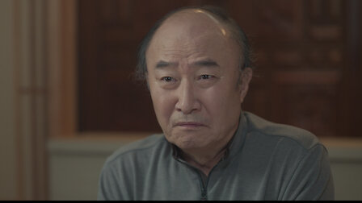

빨간 풍선
2022 | 15+ | 시즌 1개 | 드라마 장르
고등학교 때부터 절친했던 두 여자. 비밀과 질투, 욕망이 생겨나면서 자신들의
우정이 한계점에 도달했음을 깨닫는다.
주연 : 서지혜, 이성재, 홍수현
크리에이터 : 진형욱, 이승훈, 문영남
무제한으로 즐기세요
영상
| 빨간 풍선
시즌 1 <티저 예고편>: 빨간 풍선
회차
| 빨간 풍선
빨간 풍선
공개일 : 2022
고등학교 때부터 절친했던 두 여자. 비밀과 질투, 욕망이 생겨나면서 자신들의 우정이 한계점에 도달했음을
깨닫는다.
깨닫는다.
-
1. 2022-12-17
83분은강은 보석 디자이너인 오랜 친구 바다의 잡일을 돕곤 한다. 부유한 바다와는 너무도 다른 은강의 팍팍한 삶. 몇 년간 뒷바라지한 애인도 그리 든든하진 않다. 하지만 은강에게도 은밀한 욕망이 있는데. -

2. 2022-12-18
81분좋은 일을 축하하려 했는데, 은강은 마음만 다치고 만다. 그녀와 태기는 서로 다른 꿈을 꾸는 걸까. 그래도 쉽게 태기를 놓지 못하는 은강. 한편, 바다는 시댁과 친정 문제로 마음고생을 겪는다. -
3. 2022-12-24
85분바다의 시어머니가 연락도 없이 들이닥친다. 점점 심해지는 고부 갈등에 바다도 지쳐가는데. 한편, 은산은 다른 여자와 함께 있는 태기를 목격한다. 이제 끝이 온 걸까. 은강은 진실을 확인해야 할까. -
4. 2022-12-25
83분은강의 부모님을 만난 태기는 마음이 완전히 떠나버린다. 그를 놓치면 은강의 인생엔 무엇이 남을까. 태기는 그런 은강을 몰아세우며 뼈아픈 말을 던지고. 은산과 남철은 둘만의 시간을 보내며 가까워진다. -

5. 2022-12-31
82분은강이 실연의 아픔을 겪는 동안, 은산은 상사와 가까워진다. 수년간 고물상에게 무시당하며 참고 살다가 결국 화가 폭발한 지남철. -
6. 2023-01-01
76분남철이 물상에게 최후통첩을 날린다. 그러자 둘을 화해시키기 위해 직접 나선 고금아. 한편, 태기가 바다를 찾아와 불길한 경고를 한다. -
7. 2023-01-07
76분바닷가에서 둘만의 시간을 보낸 은강과 차원. 은강의 마음엔 바다를 향한 가시가 돋친다. 이제 은강은 부부 사이에 불화의 씨앗을 뿌리는데. 아무리 애를 써도, 남철은 속절없이 은산에게 마음이 간다. -
8. 2023-01-08
78분아내에게 오랜 비밀이 있었다니. 배신감과 혼란에 휩싸인 차원. 점점 심해지던 고부 갈등이 폭발하면서 바다의 집엔 경찰까지 찾아온다. 바다가 여행을 떠나도록 부추기고, 은강은 무얼 하려는 걸까. -
9. 2023-01-14
75분바다가 없는 사이, 은강은 바다의 가족과 함께 놀이공원에 간다. 그 사실이 못내 신경 쓰이는 바다의 엄마. 차원 또한 신경 쓰이는 사실을 알게 되고. 물상은 은산을 만나러 가는 남철의 뒤를 쫓는다. -
10. 2023-01-15
77분기한과 단둘이 술을 마시다 취해버린 바다. 차원은 은강 때문에 그 현장을 목격하게 된다. 그렇게 차원의 마음엔 의심과 회의가 스미는데. 남철의 외도를 눈치챈 물상은 어떻게 해야 할지 고민에 빠진다. -
11. 2023-01-28
73분은강이 차원에게 편지를 남긴다. 이 관계를 어떻게 하면 좋을지 혼란스러운 차원. 그의 마음이 바다로부터 멀어지는 듯한데. 은산에게 차마 이별을 고하지 못하던 남철은 물상의 압박에 굴복하고 만다. -
12. 2023-01-29
69분은산은 금아를 찾아가 남철과의 모든 것을 폭로한다. 이제 자신이 그를 책임지겠다고 한다. 배신감과 분노에 눈물 흘리는 금아. 미풍의 일에 바다보다 애써주는 은강을 보며, 차원은 마음이 복잡해진다. -
13. 2023-02-04
75분남철의 외도 사실이 알려지면서 집안이 발칵 뒤집어진다. 은강도 남철에게 마땅한 책임을 요구한다. 이제 정말 헤어져야 하는 걸까. 의혹을 키워가던 바다는 은강을 다그치며 진실을 알아내려 하는데. -

14. 2023-02-05
76분서로 애틋한 마음을 확인한 은강과 차원. 하지만 두 사람의 관계가 언제 바다에게 폭로될지 모른다. 한편, 바다는 뜻밖의 사건으로 사업에 위기를 맞고. 홀로 아파하던 은산은 남철의 아내를 찾아간다. -
15. 2023-02-11
75분은강과 차원을 불러낸 바다는 둘의 뺨을 때리며 폭언을 퍼붓는다. 그 자리에 시가 식구들까지 부른 바다. 그녀는 모두 앞에서 이혼을 선언하는데. 눈 오는 밤, 은산과 남철은 오피스텔 앞에서 마주친다. -
16. 2023-02-12
67분차원은 소식을 끊고 사라진 바다를 애타게 찾아다닌다. 그런 차원을 보며 마음이 복잡한 은강. 충격적인 장면을 목격한 남철은 갈등과 고민에 빠지고. 물상은 아들과 사위의 문제에 직접 나서기로 한다. -
17. 2023-02-18
79분모두가 말려도 끝까지 가보고 싶다. 온 힘을 다해 차원을 붙들려는 은강. 하지만 차원의 마음도 그녀와 같을까. 아내의 불륜을 알게 된 남철은 참담하기만 하다. 그래도 견딜 수밖에 없다, 언제나처럼. -
18. 2023-02-19
74분차원을 찾아가 비겁하다며 질타하는 은산. 고뇌하던 차원은 마침내 마음을 정하려 한다. 그리고 은강에게 전해진 반가운 소식. 모든 것이 꿈만 같은데. 하지만 바다의 디자인을 도용한 범인이 체포된다. -
19. 2023-02-25
73분바다와 은강이 함께 여행을 떠난다. 하지만 순간순간 불안에 시달리는 은강. 바다는 어떤 식으로 복수를 시작할까. 물상은 다시금 금아의 사랑을 막으려 하고, 분노한 금아는 결국 물상에게 반기를 든다. -
20. 2023-02-26
79분내가 무슨 짓을 한 걸까. 궁지에 몰린 은강은 바다 앞에 무릎을 꿇는다. 모든 것을 빼앗을 수도 있는데, 점점 마음이 흔들리는 바다. 그토록 꿈꾸던 교사가 되어 출근을 앞둔 은강은 무언가 결심한다.
상세 정보
오프라인 시청
장르
저장 기능은 광고 없는
멤버십에서만 이용 가능합니다.
멤버십에서만 이용 가능합니다.
드라마, 한국드라마
출연
서지혜
윤미라
최대철
윤미라
최대철
이성재
윤주상
이상숙
윤주상
이상숙
홍수현
이보희
설정환
이보희
설정환
이상우
정보석
정보석
정유민
김혜선
김혜선
함께 시청된 콘텐츠


공개 임박
메니페스트
사냥개들
바비의 인어 공주 이야기
레지던트 이불 2
리키줌
비행기가 착륙하니 세계는 불가사의하게도
이미 수년이 지나있고, 시간의 흐름이
캄승객들만 비껴간 것 같다. 도착한 승객들은
기이한 새로운 현실과 마주한다.
이미 수년이 지나있고, 시간의 흐름이
캄승객들만 비껴간 것 같다. 도착한 승객들은
기이한 새로운 현실과 마주한다.
두 청년 복서가 선한 대부업자와 한뜻으로
뭉친다. 돈 때문에 절박한 약자들을 먹잇감
삼는 악랄한 사채업자에 대적하기 위해.
뭉친다. 돈 때문에 절박한 약자들을 먹잇감
삼는 악랄한 사채업자에 대적하기 위해.
자신이 인어라는 사실을 알게 된 소녀 멀리아.
서핑 챔피언인 멀리아는 돌고래의 도움을 받아
오세아나의 여왕인 엄마를 구해야 한다!
서핑 챔피언인 멀리아는 돌고래의 도움을 받아
오세아나의 여왕인 엄마를 구해야 한다!
죽음의 바이러스가 확산되자 봉쇄에 들어간
라쿤 시티. 좀비와 함께 그곳에 갇힌 앨리스와
엘리트 군단은 새로운 악의 등장을 마주한다.
라쿤 시티. 좀비와 함께 그곳에 갇힌 앨리스와
엘리트 군단은 새로운 악의 등장을 마주한다.
리키 줌과 단짝 바이크 친구들이 바이크 마을
휠포드를 쌩쌩 달려요. 구조 임무도 해내고
빠르게 움직이는 스턴트도 배운답니다.
우리도 함께 신나게 달려볼까요!
휠포드를 쌩쌩 달려요. 구조 임무도 해내고
빠르게 움직이는 스턴트도 배운답니다.
우리도 함께 신나게 달려볼까요!
아놀드
러브 데스티나: 더 무비
뷰티풀 라이프
보디빌딩 챔피언부터 시작해 할리우드
아이콘을 거쳐 정치인이 되기까지, 아놀드
슈워제네거의 다각적인 삶과 커리어를 따라가는
내밀한 다큐시리즈.
아이콘을 거쳐 정치인이 되기까지, 아놀드
슈워제네거의 다각적인 삶과 커리어를 따라가는
내밀한 다큐시리즈.
다른 생에서 사랑했던 여인을 꿈에서 본 한
남자. 그녀를 다시 만나게 될 운명이라고
믿는다. 하지만 정체를 알 수 없는 시간 여행자가
나타나 그의 계획을 방해한다.
남자. 그녀를 다시 만나게 될 운명이라고
믿는다. 하지만 정체를 알 수 없는 시간 여행자가
나타나 그의 계획을 방해한다.
남다른 재능을 숨기고 살던 청년 어부가 어느
날 한 음악 프로듀서의 눈길을 끈다. 그의
앞에서 손짓하는 스타덤과 사랑. 그는 이 새로운
길에 뛰어들 준비가 되었을까?
날 한 음악 프로듀서의 눈길을 끈다. 그의
앞에서 손짓하는 스타덤과 사랑. 그는 이 새로운
길에 뛰어들 준비가 되었을까?